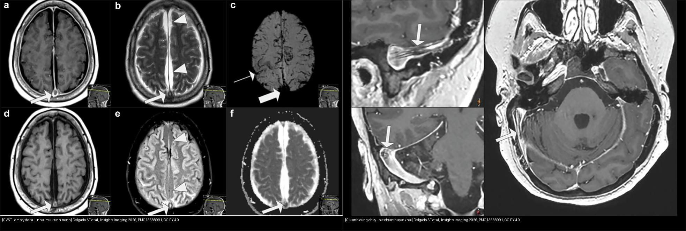
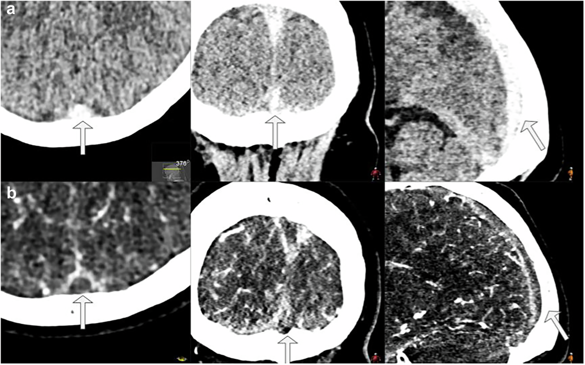
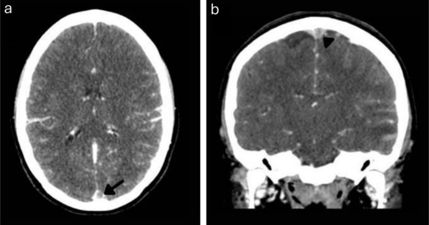
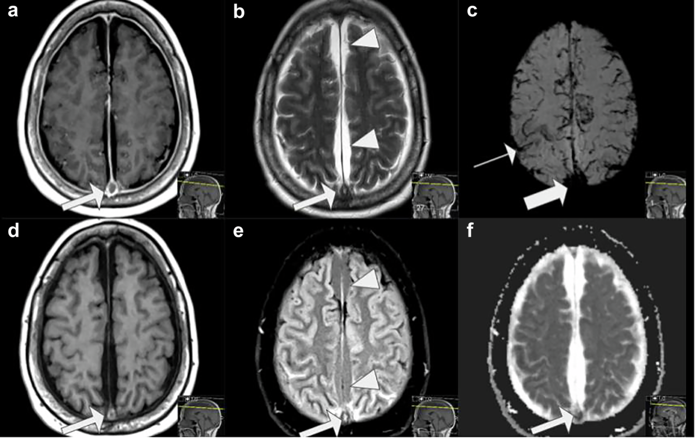
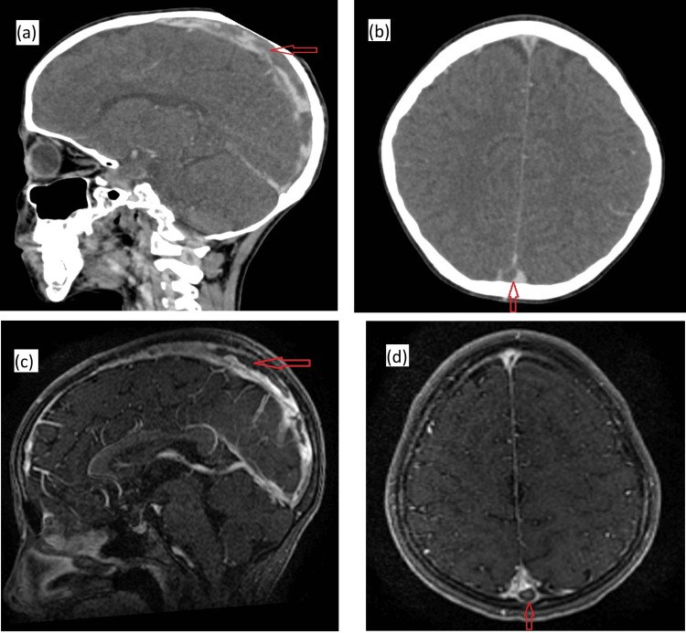
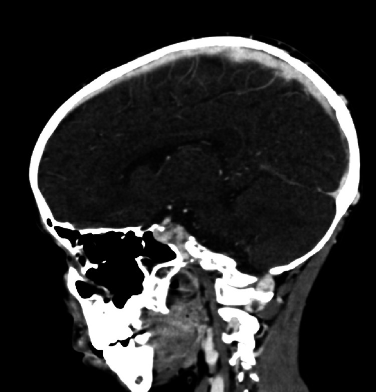
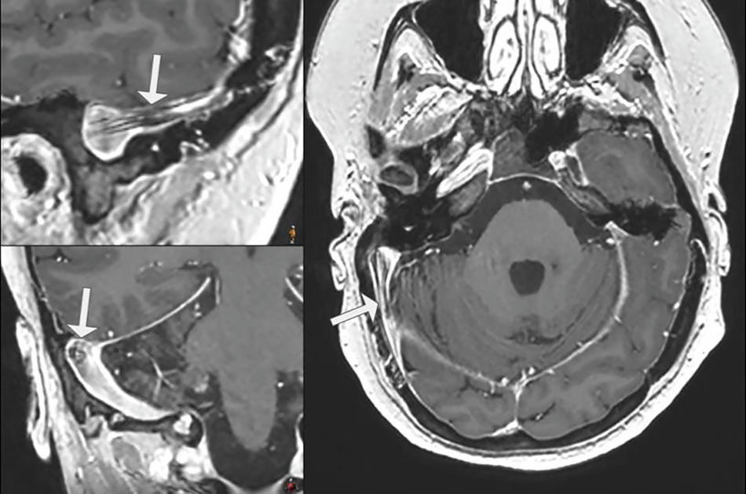

216 — Dị dạng mạch não & huyết khối xoang tĩnh mạch / Aneurysm, AVM, Cavernoma & CVST
Tags: pattern:di-dang-mach pattern:khuyet-thuoc-xoang vung:mach-nao protocol:CTA-MRV score:Spetzler-Martin
Mức chắc chắn (certainty): tổng hợp y văn (literature synthesis) — bài tổng quan hình ảnh + ca nguyên văn (verbatim case) từ nguồn CC BY; số liệu lấy từ bài gốc có PMCID.
Điểm chốt: bốn thực thể trong một bài vì cùng nằm trên phổ "mạch máu não": phình vỡ → SAH, AVM → xuất huyết/nidus, cavernoma → "bỏng ngô" + viền hemosiderin, CVST → nhồi máu không theo lãnh thổ động mạch + empty delta. CVST là chẩn đoán hay bị bỏ sót nhất ở trẻ đau đầu/co giật, và kháng đông không chống chỉ định chỉ vì có xuất huyết.
1. Tổng quan bệnh học – cơ chế hình ảnh
1.1 Phình động mạch (intracranial aneurysm)
- Túi phình thường ở chỗ chia mạch (thông trước, thông sau, MCA bifurcation). Thành túi chỉ còn nội mạc + xơ, thiếu lớp cơ → vỡ khi gắng sức/tăng huyết áp.
- TẠI SAO SAH có máu bể nền: vỡ túi đổ máu vào khoang dưới nhện → CT không cản quang thấy máu tăng đậm độ ở bể nền/rãnh; biến chứng co thắt mạch (vasospasm) đỉnh ngày 3–14, gây nhồi máu muộn.
- Nguy cơ vỡ tăng theo kích thước: ≥ 7 mm (tuần hoàn trước) / ≥ 5 mm (tuần hoàn sau) là ngưỡng thường được cân nhắc can thiệp; nhưng phình < 5 mm vẫn có thể vỡ, nhất là phình đã có tiền sử vỡ.
- Điều trị: coil nội mạch hoặc kẹp (clip) ≤ 72 giờ sau SAH; nimodipine dự phòng co thắt.
1.2 Dị dạng động–tĩnh mạch (AVM)
- Nidus nối trực tiếp ĐM–TM không qua mao mạch → shunt lưu lượng cao, mạch nuôi giãn, dẫn lưu TM sớm.
- Trên MRI: búi flow void ("bag of worms"), có thể kèm xuất huyết cũ (SWI tối) và vôi hóa; DSA xác định nidus + shunt.
- Phân độ Spetzler–Martin (1–5): kích thước (< 3 cm = 1; 3–6 cm = 2; > 6 cm = 3) + vùng chức năng (+1) + dẫn lưu TM sâu (+1). Điểm càng cao, nguy cơ phẫu thuật càng lớn → cân nhắc dao gamma/xạ định vị hoặc theo dõi.
1.3 Cavernoma (cavernous malformation)
- Các xoang mạch (caverns) thành mỏng, không có nhu mô não giữa các xoang, không shunt động–tĩnh mạch đáng kể.
- Hình ảnh đặc trưng: "bỏng ngô" (popcorn) đa tín hiệu do máu ở nhiều giai đoạn (hemoglobin thoái giáng: methemoglobin sáng T1, hemosiderin tối T2/SWI), viền hemosiderin tối trên SWI/T2*, thường kèm DVA.
- TẠI SAO đa tín hiệu: các đợt xuất huyết lặp lại tạo các "ống" máu ở thời điểm khác nhau → T1/T2 hỗn hợp; không ngấm thuốc đáng kể (khác u).
1.4 Huyết khối xoang tĩnh mạch não (cerebral venous sinus thrombosis, CVST)
- Sinh lý bệnh: tắc xoang → tăng áp lực tĩnh mạch → giảm chênh áp tưới máu, phù não, nhồi máu tĩnh mạch và/hoặc xuất huyết. Vì vậy nhồi máu không theo lãnh thổ động mạch, hay hai bên/đối xứng, ưu thế đồi thị, thùy chẩm/đỉnh, thùy thái dương.
- Dịch tễ trẻ: 0,6–1,1/100.000 trẻ/năm, đang tăng khoảng 3,8%/năm (chuẩn hóa tuổi–giới); nhập viện vì CVST tăng 4,9%/năm ở Mỹ (Maratta C et al., Crit Care Explor 2026, PMC13200926). Tử vong 3–12%, di chứng thần kinh tới 62% người sống.
- Bối cảnh ở trẻ: nhiễm trùng đầu–cổ (viêm xoang, viêm tai xương chũm), mất nước, thiếu máu, sepsis, bệnh ác tính/điều trị, tăng đông di truyền, hội chứng thận hư, lupus. Ở trẻ sơ sinh: co giật, kích thích, thóp căng; trẻ lớn: đau đầu + phù gai + nhìn đôi.
- Cơ chế hình ảnh:
- CT không cản quang: máu tụ trong xoang tăng đậm độ ("dense sinus"/cord sign); độ nhạy thấp, dễ bỏ sót nếu không nhìn xoang.
- CTV/MRV: khuyết thuốc (filling defect) trong xoang — tiêu chuẩn chẩn đoán; empty delta sign = trung tâm huyết khối không ngấm, viền màng cứng ngấm (chỉ thấy khi có cản quang, thường sau vài ngày).
- MRI: huyết khối thay đổi theo thời gian — T1 sáng khi methemoglobin (bán cấp sớm), T2 tối khi hemosiderin (muộn); T2*/SWI thấy vi xuất huyết/tĩnh mạch giãn "corkscrew"; DWI/ADC phân biệt phù mạch (ADC tăng) với nhồi máu (ADC giảm).
- Nhồi máu tĩnh mạch trên CT: giảm đậm độ không theo lãnh thổ + xuất huyết trong ổ (thường thùy thái dương/đỉnh), có thể hiệu ứng khối.
- Điều trị: kháng đông (heparin/LMWH) NGAY cả khi có xuất huyết kèm, sau đó warfarin/DOAC 3–12 tháng tùy nguyên nhân; không dùng kháng đông là sai lầm chết người. Nặng: dẫn lưu/xuất huyết giải ép, khi thất bại có thể huyết khối cơ học nội mạch ở trung tâm có kinh nghiệm.
2. Mẫu hình + chẩn đoán phân biệt theo vị trí (gamut)
- SAH bể nền + đau đầu sét đánh + túi ở chỗ chia mạch: phình vỡ → CTA + coil/clip ≤ 72 giờ + nimodipine.
- Búi flow void + shunt sớm trên DSA + xuất huyết thùy: AVM → Spetzler–Martin.
- "Bỏng ngô" + viền SWI tối + không ngấm + DVA: cavernoma → theo dõi; mổ khi tái chảy/thần kinh tiến triển.
- Nhồi máu không theo lãnh thổ + đau đầu/phù gai + khuyết thuốc xoang: CVST → CTV/MRV + kháng đông.
- Xuất huyết thùy thái dương/đỉnh + giãn tĩnh mạch bề mặt + không có túi phình: nghĩ CVST có nhồi máu xuất huyết — tìm khuyết thuốc xoang, đừng dừng ở "ICH".
- Tăng đậm độ một xoang đơn độc trên CT không cản quang: phân biệt huyết khối với máu đặc do hematocrit cao, giả ảnh dòng chảy, hạt nhện (arachnoid granulation), xoang giảm sản.
3. Bảng so sánh phân biệt (ma trận đối chiếu)
| Thực thể (entity) | Hình ảnh điển hình | Chốt vào (rule-in) | Chốt loại (rule-out) | Gợi ý xác nhận |
|---|---|---|---|---|
| Phình vỡ | Túi ở chỗ chia mạch + SAH bể nền/rãnh + có thể máu não thất | SAH + túi ≥ 5–7 mm (hoặc bất kỳ túi đã vỡ) | Búi nidus/shunt → AVM; không túi + máu thùy → CVST/AVM | CTA (hoặc MRA) + DSA; coil/clip ≤ 72 giờ; nimodipine |
| AVM | Búi flow void + mạch nuôi giãn + TM dẫn lưu sớm; xuất huyết/vôi hóa | Nidus + shunt ĐM–TM sớm trên DSA; Spetzler–Martin 1–5 | "Bỏng ngô" + viền hemosiderin, không shunt → cavernoma | DSA 4 mạch; MRI/SWI; gamma/mổ theo điểm |
| Cavernoma | "Bỏng ngô" đa tín hiệu + viền hemosiderin tối SWI + DVA; không ngấm đáng kể | Viền hemosiderin + đa giai đoạn máu + không shunt | Nidus + shunt → AVM; ngấm đặc → u | SWI/T2*; theo dõi; mổ khi tái chảy |
| CVST | Tăng đậm độ xoang (CT) + empty delta + khuyết thuốc CTV/MRV + nhồi máu không theo lãnh thổ/xuất huyết | Khuyết thuốc trong xoang + nhồi máu tĩnh mạch; đau đầu/phù gai/co giật | Nhồi máu theo lãnh thổ ĐM + mạch bình thường → AIS; khuyết thuốc giả do dòng chảy/hạt nhện | CTV/MRV (hoặc MRI + MRV); D-dimer; kháng đông kể cả có máu |
| Nhồi máu tĩnh mạch do CVST | Giảm đậm độ không theo lãnh thổ + xuất huyết trong ổ + giãn tĩnh mạch bề mặt | Nhồi máu + xuất huyết thùy + khuyết thuốc xoang | Nhồi máu theo lãnh thổ MCA/PCA + mạch động mạch bình thường → AIS | MRI DWI/ADC + SWI + MRV; kháng đông + theo dõi |

Trái: (a,b) T1 sau tiêm empty delta (trung tâm huyết khối không ngấm, viền màng cứng ngấm); (c) DWI ổ nhồi máu tĩnh mạch; (d–f) T2 hỗn hợp + DWI/ADC. Phải: giả ảnh dòng chảy trên T1 3D GRE — khuyết tín hiệu trong xoang ngang phải, bắt chước huyết khối; phải đối chiếu T2/CTV. Nguồn: Delgado AF et al., Insights Imaging 2026, PMC13588991, CC BY 4.0. Ảnh ghép letterbox, giữ tỉ lệ.Dấu hiệu trên CT không cản quang và CTV:

(a) CT không cản quang nhiều lát: xoang dọc trên tăng đậm độ (máu tụ); (b) CTV: khuyết thuốc trong xoang dọc trên, không ngấm thuốc. Nguồn: Delgado AF et al., Insights Imaging 2026, PMC13588991, Fig. 1, CC BY 4.0.4. Protocol chụp + hệ phân độ/điểm chuẩn hóa
4.1 Protocol
- CT không cản quang (cấp cứu): tìm máu dưới nhện, xuất huyết, tăng đậm độ xoang; không đủ để loại trừ CVST.
- CTA/CTV (hoặc MRA/MRV nếu trẻ/không thuốc cản quang): xác định túi phình, nidus, khuyết thuốc xoang.
- MRI sọ: T1, T2, FLAIR, DWI/ADC, SWI/T2*, TOF-MRA; MRV khi nghi tĩnh mạch. T1 sau tiêm để tìm empty delta/viêm màng cứng.
- DSA (tiêu chuẩn vàng): AVM (nidus/shunt), phình nhỏ, CVST khi cần can thiệp; ở trẻ cần gây mê có kiểm soát.
- Xét nghiệm: công thức máu/hematocrit (giả tăng đậm độ), D-dimer, đông máu, yếu tố nguy cơ (nhiễm trùng, mất nước, thuốc, thai/hậu sản ở trẻ lớn), tầm soát tăng đông khi tái phát/gia đình.
4.2 Phân độ & ngưỡng xử trí
- Phình: nguy cơ vỡ tăng theo kích thước; ≥ 7 mm trước / ≥ 5 mm sau thường được cân nhắc can thiệp; đã vỡ = can thiệp sớm ≤ 72 giờ.
- AVM: Spetzler–Martin 1–5 (kích thước + vùng chức năng + dẫn lưu sâu); điểm cao → ưu tiên xạ/gamma hoặc theo dõi.
- CVST: không có thang điểm hình ảnh quyết định; khuyết thuốc + biến chứng (nhồi máu/xuất huyết) định hướng điều trị. Kháng đông 3–12 tháng; không chống chỉ định vì xuất huyết; giải ép khi hiệu ứng khối.
- Theo dõi: CTV/MRV lặp sau 3–6 tháng để đánh giá tái thông; MRI khi thần kinh xấu đi.
flowchart TD A["Dau dau set danh / co giat / thieu hut than kinh"] --> B["CT khong can quang"] B -->|"SAH be nen"| C["Phinh: CTA/DSA, coil/clip <= 72 gio + nimodipine"] B -->|"Mau thuy + khong theo lanh tho"| D["Nghi CVST: CTV/MRV + D-dimer"] B -->|"Tang dam do xoang"| D B -->|"Binh thuong nhung lam sang manh"| E["MRI: DWI/ADC, SWI, TOF-MRA, T1 sau tiem"] E -->|"Bui flow void + shunt"| F["AVM: DSA + Spetzler-Martin"] E -->|"Bong ngo + vien hemosiderin"| G["Cavernoma: theo doi / mo khi tai chay"] E -->|"Empty delta / khuyet thuoc xoang"| D D --> H["Khang dong heparin/LMWH NGAY (ke ca co xuat huyet)"] H --> I["Warfarin/DOAC 3-12 thang + theo doi tai thong"]
5. Biến thể bình thường và cạm bẫy
- Giả ảnh dòng chảy (flow artifact) trên T1 3D GRE/TOF có thể tạo "khuyết tín hiệu" trong xoang ngang — đối chiếu T2, CTV/MRV, đừng chẩn đoán CVST chỉ dựa một chuỗi.
- Hạt nhện (arachnoid granulation) là khuyết thuốc bờ nhẵn, hình bầu dục, thường ở xoang ngang gần chỗ đổ vào xoang dọc; không ngấm như huyết khối và không đổi theo thời gian. So sánh phim cũ.
- Xoang giảm sản/bất đối xứng (thường xoang ngang trái nhỏ) và hẹp xoang trong tăng áp lực nội sọ vô căn có thể giả "huyết khối" — cần CTV/MRV + bối cảnh.
- Máu đặc (polycythemia/hematocrit cao) làm xoang tăng đậm độ giả trên CT; kiểm tra hematocrit.
- Không kháng đông CVST vì sợ xuất huyết = sai lầm chết người: huyết khối lan là nguyên nhân tử vong, kháng đông được chỉ định kể cả khi có xuất huyết kèm (theo dõi sát).
- Bỏ sót CVST ở trẻ sơ sinh: co giật/kích thích/thóp căng không đặc hiệu → siêu âm qua thóp có thể bình thường; cần MRI + MRV.
- "Satisfaction of search" sau khi thấy máu thùy: luôn nhìn xoang tĩnh mạch và mạch động mạch trước khi kết luận "ICH tự phát".
- Phình nhỏ < 5 mm vẫn vỡ — kích thước là xác suất, đã vỡ là can thiệp bất kể mm.
- Cavernoma gia đình đa ổ dễ bỏ sót — SWI toàn não + tầm soát người thân.
6. Tự lượng giá — Blind Quiz
Ca 1 — Đau đầu + phù gai + nhìn đôi. CTA axial + coronal.

- Hỏi: tên dấu? Tắc ở đâu? Kháng đông có chống chỉ định khi có máu không?
Bấm để hiện đáp án
- Dấu hiệu: trung tâm xoang không ngấm + viền màng cứng ngấm = empty delta xoang ngang.
- Chẩn đoán: CVST — kháng đông ngay cả khi có chảy máu kèm (heparin → LMWH/DOAC + theo dõi).
- Nguồn: Rojas-Oviedo et al., Clin Case Rep 2026 (PMC13161870), Fig. 1, CC BY-NC-ND 4.0 (nguyên bản, không ghép).
Ca 2 — Trẻ đau đầu, co giật; CT không cản quang rồi CTV. Dấu hiệu nào chốt?
- Hỏi: (a) bất thường trên CT không cản quang? (b) CTV xác nhận gì? Có cần chọc dò không?
Bấm để hiện đáp án
- Dấu hiệu: (a) xoang dọc trên tăng đậm độ (huyết khối cấp); (b) CTV khuyết thuốc trong xoang, không ngấm.
- Chẩn đoán: CVST cấp — CT không cản quang không đủ loại trừ, CTV/MRV là bước xác nhận. Không chọc dò khi đã có chẩn đoán hình ảnh; kháng đông sớm.
- Nguồn: Delgado AF et al., Insights Imaging 2026 (PMC13588991), Fig. 1, CC BY 4.0.
Ca 3 — Đau đầu + nhìn mờ, MRI trước và sau tiêm. Empty delta và ổ nhồi máu?

- Hỏi: (a,d) dấu gì? (b,e) vì sao tín hiệu hỗn hợp? (c,f) DWI/ADC nói gì?
Bấm để hiện đáp án
- Dấu hiệu: (a,d) T1 sau tiêm: empty delta; (b,e) T2: huyết khối tín hiệu hỗn hợp (các giai đoạn hemoglobin khác nhau); (c) DWI có ổ tăng tín hiệu, (f) ADC giảm = nhồi máu tĩnh mạch.
- Chẩn đoán: CVST có biến chứng nhồi máu — kháng đông + theo dõi sát; nếu hiệu ứng khối nặng → cân nhắc giải ép.
- Cơ chế: empty delta do trung tâm huyết khối không có mạch máu, viền màng cứng ngấm; nhồi máu do tăng áp lực tĩnh mạch → phù độc tế bào (ADC giảm).
- Nguồn: Delgado AF et al., Insights Imaging 2026 (PMC13588991), Fig. 4, CC BY 4.0.
Ca 4 — Bé trai có u lympho Burkitt, đau đầu; CT có cản quang (a–d) và sau 2 tháng điều trị (e).

- Hỏi: khuyết thuốc ở đâu? Vì sao trẻ ung thư dễ CVST? Điều trị gì?
Bấm để hiện đáp án
- Dấu hiệu: (a) sagittal, (b) axial: khuyết thuốc trong xoang dọc trên (mũi tên đỏ); (c,d) sau tiêm: xoang không ngấm hoàn toàn. (e) sau 2 tháng kháng đông: xoang ngấm đều, hết khuyết thuốc.
- Chẩn đoán: CVST trên nền ung thư/điều trị (tăng đông do bệnh ác tính + hóa trị + mất nước). Điều trị: kháng đông (cân nhắc nguy cơ chảy máu do giảm tiểu cầu), theo dõi hình ảnh.
- Tái thông sau 2 tháng kháng đông: xoang ngấm đều trở lại, không còn khuyết thuốc.

- Nguồn: Fouad KE et al., Cureus 2025 (PMC12450065), Fig. 6 + Fig. 7, CC BY 4.0.
Ca 5 — Xuất huyết thùy thái dương "tự phát". Có phải chỉ là ICH?

- Hỏi: vị trí? Có đặc điểm nào không điển hình cho xuất huyết do tăng huyết áp? Bước tiếp theo?
Bấm để hiện đáp án
- Dấu hiệu: ổ giảm đậm độ + xuất huyết trong ổ ở thùy thái dương phải (mũi tên), bờ không đều, không theo lãnh thổ động mạch; có thể thấy giãn tĩnh mạch bề mặt.
- Chẩn đoán: nhồi máu xuất huyết do CVST — không phải ICH tăng huyết áp điển hình (thường nhân xám sâu). Bước tiếp: CTV/MRV + D-dimer, kháng đông nếu xác nhận.
- Nguồn: Hammadi H et al., Cureus 2026 (PMC12968466), Fig. 1, CC BY 4.0.
Ca 6 — Bệnh nhân nghi CVST, T1 3D GRE thấy khuyết tín hiệu xoang ngang phải. Có phải huyết khối?

- Hỏi: vì sao có thể không phải huyết khối? Cần chuỗi/đối chiếu nào?
Bấm để hiện đáp án
- Dấu hiệu: khuyết tín hiệu trong xoang ngang phải trên T1 3D GRE (mũi tên) — giả ảnh dòng chảy do dòng máu nhanh, không có huyết khối thật.
- Chẩn đoán: flow artifact — loại trừ bằng T2/CTV/MRV và bối cảnh (không đau đầu/không yếu tố nguy cơ). Đây là cạm bẫy hay gặp nhất khi đọc T1 3D.
- Nguồn: Delgado AF et al., Insights Imaging 2026 (PMC13588991), Fig. 7, CC BY 4.0.
Ca 7 — Túi thông trước 8 mm vỡ + SAH Fisher 3: coil hay theo dõi? Thuốc chống co thắt? (Bảng mục 3.)
Bấm để hiện đáp án
- Coil/kẹp ≤ 72 giờ + nimodipine: ≥ 7 mm trước + đã vỡ = can thiệp (không theo dõi).
Ca 8 — Bỏng ngô thái dương + viền SWI tối + co giật 1 cơn: AVM hay cavernoma? Mổ ngay? (Bảng mục 3.)
Bấm để hiện đáp án
- Cavernoma: theo dõi + thuốc chống co giật (mổ khi tái chảy/thần kinh tiến triển).
Bài liên quan chéo
- 200 – Tổng quan Thần kinh
- 211 – Đột quỵ não — nhồi máu theo lãnh thổ động mạch (đối chiếu).
- 212 – Xuất huyết sọ — SAH Fisher, ICH.
- 219 – PRES & RCVS — co mạch não có hồi phục, phân biệt với viêm mạch.
- 652 – Đột quỵ & bệnh mạch máu não ở trẻ — CVST là DDx của đột quỵ trẻ.
Không dùng để chẩn đoán độc lập khi chưa có người hướng dẫn.